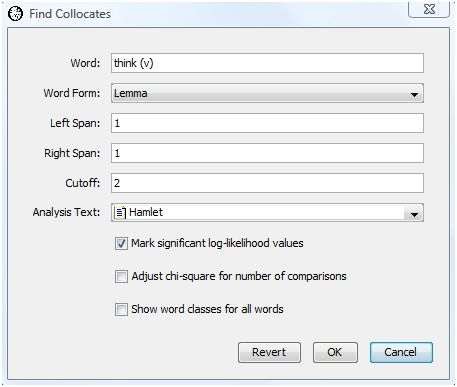
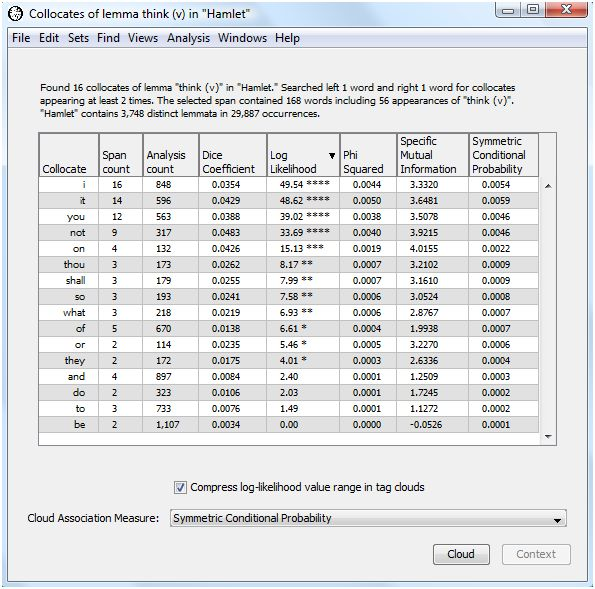
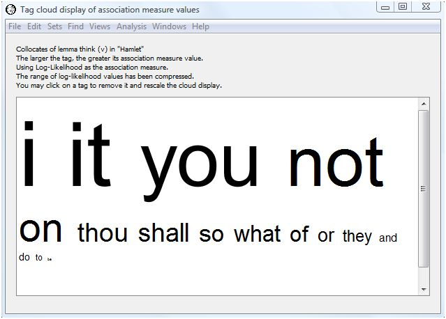
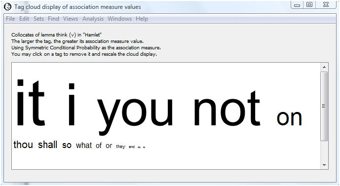
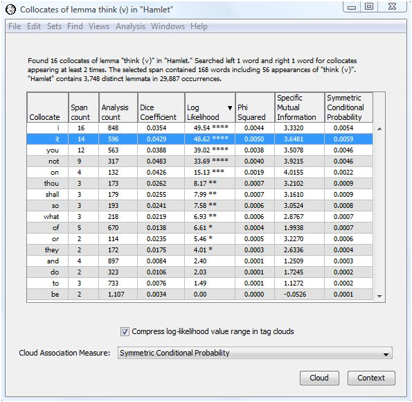
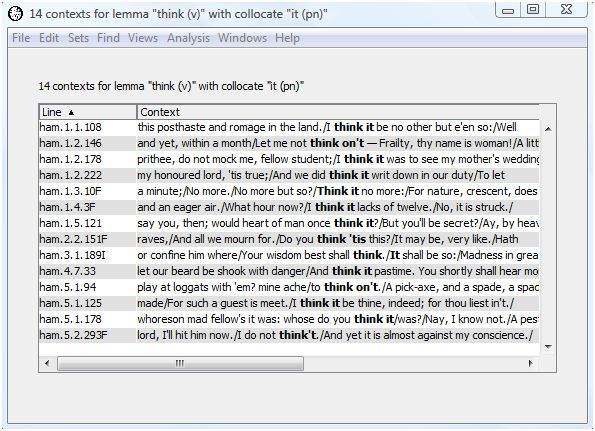
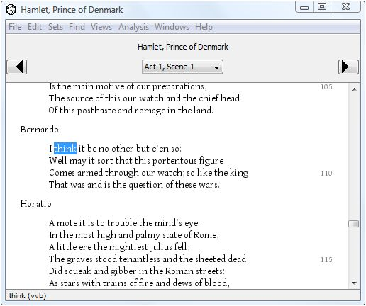

|
|
|
The Latin maxim noscitur a soclis (one knows them by their associates) applies to words as well as people. Often we want to know not only how often a word form appears in a text, but also how frequently two or more specific word forms appear near each other in a text. Words which appear in proximity more frequently than expected are called collocates.
Some collocates appear in rigid or frozen forms. Examples include titles such as King of England and President of the United States, adverbial phrases such as in general, and verbal phrases such as freeze up. You may be interested in the frozen forms an author uses. You may be interested in collocates which are not frozen forms and which are unique to a specific author or a specific work. You can use the same WordHoard facilities to pursue either type of investigation. The WordHoard Find Multiword Units analysis is more helpful if you are primarily interested in uncovering multiword phrases and frozen forms. If you want to compare the relative frequency of collocates for a word in two different texts, see Comparing Collocates.
To locate collocates we need to define three quantities.
In WordHoard you start by choosing a specific spelling or lemma for which you want to find collocates. We call this the focus word or the node. You define the search neighborhood for collocates by specifying a span of words to the left and right of the focus word within which to search for collocates. Different words tend to require spans of different size. In English, short spans usually work well.
WordHoard provides five different commonly used statistical measures for assessing which words in the neighborhood of the focus word are possible collocates. The measures compare the observed frequency of the potential collocate in the neighborhood of the focus word with the frequency of the potential collocate in the entire text, which WordHoard uses as the reference frequency.
In the following we search for collocates of the verb "think" in Shakespeare's "Hamlet". To find the collocates, select "Find Collocates" from the Analysis menu. WordHoard displays the following dialog.

The dialog fields are as follows.
Word is the chosen focus word whose collocates we seek. In this example we select the word "think (v)", e.g., "think" used as a verb.
Word Form specifies the type of word form to find. You may specify lemma or spelling. We select lemma for our analysis. Choosing the lemma allows us to ignore spelling differences that might otherwise mask the recognition of a collocate because it appears in several different word forms, e.g., as a singular or plural noun, or in different verb tenses. If you are interested primarily in frozen forms, you probably want to choose spelling instead.
Left span specifies how many words to the left of the focus word in the text WordHoard should look for collocates.
Right span specifies how many words to the right of the focus word in the text WordHoard should look for collocates.
Cutoff specifies the mininum number of times a word must appear in the neighborhood of the focus word to be considered a collocate.
Analysis Text provides the text in which to search for collocates of the selected word. We select Shakespeare's play "Hamlet" as the analysis text.
Mark significant log-likelihood values appends asterisks to each significant log-likelihood value. When the significance values are not being adjusted (see the next option below), the asterisks indicate the following levels of significance.
| **** | Significant at 0.0001 level |
| *** | Significant at 0.001 level |
| ** | Significant at 0.01 level |
| * | Significant at 0.05 level |
We enable this option.
Adjust chi-square for number of comparisons adjusts the breakpoints for assessing the significance of the log-likelihood statistics as described in the section Adjusting significance levels for many comparisons. We do not enable this option.
Show word classes for all words asks WordHoard to display the word class for spellings and lemmata in the output. If you do not enable this option, WordHoard displays only the spelling or lemma text. We do not enable this option.
WordHoard presents the output of the collocate analysis in a table with eight columns. The first column contains the potential collocates of "think (v)". This includes all the words which appeared at least "cutoff" number of times in the chosen span of words to the left and right of the focus word.
The second column shows the number of times the potential collocate occurs near "think (v)" within the specified span.
The third column presents the total number of times the potential collocate appears in the analysis text. That is the reference frequency for the collocate.
The next five columns present measures of association for the potential collocate. We discuss those below.
The header of the output table provides the frequency for the focus word. In this case, "think (v)" appears 56 times in Hamlet. There are 168 words which appear within the chosen span of 1 word to the right and 1 word to the left of "think (v)" anywhere in Hamlet.

WordHoard provides five commonly used measures of association for assessing how well two words adhere. In each case, the higher the value of the measure of association, the more likely the words are to be collocates. You can sort the collocates on any one of the association measure values by holding down the shift key and clicking the column header for the measure. By default WordHoard sorts the collocates by descending log-likelihood value.
All of the measures depend upon an estimate of the probability of occurrence for each word and for the two words together. WordHoard uses the maximum likelihood estimate for the probability, which is just the frequency of occurrence divided by the total number of words in the text -- either the number of spellings or the number of lemmata, depending upon which type of word form we chose to analyze.
The calculations for all the association measures are based upon the following contingency table. Here w1 is the focus word and w2 is the potential collocate.
w2 ~w2 w1 O11 O12 R1 ~w1 O21 O22 R2 C1 C2 N
w2 ~w2 w1 E11 = R1C1/N E12 = R1C2/N ~w1 E21 = R2C1/N E22 = R2C2/N
Here is the contingency table for the potential collocate "it" derived from the WordHoard output above. Entries in the left-hand table which appear in plain text come directly from the WordHoard output. Entries in italics are computed using the marginal constraints. The expected values under independence are computed from the formulae provided above. Internally WordHoard constructs these contingency table entries in order to compute the association measures.
it ~it think 14 42 56 ~think 582 29249 29831 596 29291 29887
it ~it think E11 = 1.11674 E12 = 54.88326 ~think E21 = 594.88326 E22 = 29236.11674
Based upon the entries in this contingency table we can define the five association measures presented by WordHoard as follows.
Dice Coefficient
Dice coefficient = ( 2 * O11 ) / ( R1 + C1 )
For our example, the Dice coefficient for "it" is computed as:
| Dice coefficient | = ( 2 * 14 ) / ( 56 + 596 ) |
| = 28 / 652 | |
| = 0.0429 |
The Dice coefficient takes values from 0 through 1. The value increases as the frequency of the co-occurrences of the focus word and potential collocate increases relative to the counts of the focus word and potential collocate individually. A Dice score of zero means the words never appear together, while a Dice score of one means the words always appear together. Mathematically the Dice score is the harmonic mean of the conditional probabilities P(w1 | w2) and P(w2 | w1). P(w1 | w2) is the conditional probability that the second word in the bigram appears given the first word. P(w2 | w1) is the conditional probability that the first word in the bigram appears given the second word.
For our example, the top five scoring words (lemmata) are not, it, on, you, shall.
Phi-squared (φ2)
φ2 = 2 * ( O11 - E11 ) / ( E11 * N )
For our example, the φ2 value for "it" is computed as:
| φ2 | = 2 * ( 14 - 1.11674 ) / ( 1.11674 * 29887 ) |
| = 165.978 / 33376.01 | |
| = 0.0050 |
φ2 takes values from 0 through 1. φ2 is the Pearson chi-square value of association divided by the number of words. In other words, you can recover the Pearson chi-square value for the contingency table from φ2. WordHoard displays the log-likelihood chi-square value in preference to Pearson's chi-square because the log-likelihood value is more reliable for literary studies.
For our example, the top five scoring words (lemmata) using φ2 are it, not, I, you, on.
Log-likelihood
The log-likelihood ratio statistic G2 measures the discrepancy of the the observed word frequencies from the values which we would expect to see if the word frequencies (by percentage) were the same in the neighborhood of the collocate and the entire text. The larger the discrepancy, the larger the value of G2, and the more statistically significant the difference between the frequency of the potential collocate's appearance in the neighborhood of the focus word from the collocate's appearance in the text as a whole.
| Log-likelihood = | 2 * (O11 * ln(O11/E11) + O12 * ln(O12/E12) + O21 * ln(O21/E21) + O22 * ln(O22/E22)) |
For our example, the log-likelihood value for "it" is computed as:
| Log-likelihood = | 2 * ( 14 * ln( 14 / 1.11674 ) + 42 * ln( 42 / 54.88326 ) + 582 * ln( 582 / 594.88326 ) + 29249 * ln( 29249 / 29236.11674 ) ) |
| = | 2 * ( 14 * 2.52864 - 42 * 0.267539 - 582 * 0.021895 + 29249 * 0.004406 ) |
| = | 48.62 |
WordHoard ignores any zero observed count value in computing the log-likelihood value.
For our example, the top five scoring words (lemmata) are it, I, not, you, on.
Specific Mutual Information compares the probability of finding the two words w1 and w2 in proximity to the expected probability that the two words appear independently of each other in the text.
Mutual Information = log2( O11 / E11 )
For our example, the mutual information value for "it" is computed as:
| Mutual information | = log2( 14 / 1.11674 ) |
| = log2( 12.53649 ) | |
| = 3.6481 |
When the specific mutual information score is zero the two words are not collocates. When the score is greater than zero, the two words may be collocates. How do we determine which values indicate a collocate relationship exists or not? One commonly applied rule of thumb is that a Specific Mutual Information score greater than 1.585 indicates the two words are possible collocates. Since 1.585 is the log2 of 3, a score greater than 1.585 indicates the observed ratio occurs at least three times more than expected by chance. For our example, the top five scoring words (lemmata) are on, not, it, or, shall.
Another approach is to compute the salience of the word pair by multiplying the mutual information score by the log2 of the co-occurrence count:
Salience = log2( O11 ) * Mutual Information score
For example, the salience for "it" is given by:
| Salience for "it" | = log2( 14 ) * 3.6481 |
| = 3.8074 * 3.6481 | |
| = 13.89 |
Frequent word pairs will take on a higher salience value. For our example, the words sorted in descending order by salience are:
Word Salience it 13.89 not 12.43 i 11.09 you 10.73 on 8.03 thou 6.01 shall 5.01 so 4.84 of 4.63 what 4.56 they 4.45 or 3.23 and 2.50 to 1.79 do 1.72 be -005
Mutual information tends to weight rare events more highly than common events. That may be useful in detecting unusual frozen forms. The derived salience values are less sensitive to rare events.
Symmetric Conditional Probability
The Symmetric Conditional Probability is the product of the two conditional probabilities P(w1 | w2) and P(w2 | w1). P(w1 | w2) is the conditional probability that the second word in the bigram appears given the first word. P(w2 | w1) is the conditional probability that the first word in the bigram appears given the second word. Symnmetric Conditional Probability takes values from 0 through 1. The closer the value is to 1, the more likely the two words are to be collocates.
Symmetric Conditional Probability = O112 / ( R1 * C1 )
For our example, the symmetric conditional probability coefficient for "it" is computed as:
| Symmetric conditional probability | = (14 * 14) / ( 56 * 596 ) |
| = 196 / 33376 | |
| = 0.0059 |
For our example, the top five scoring words (lemmata) are it, not, i, you, on.
The different measures produce different rankings of the degree to which each potential collocate adheres with the focus word. Which measure is best for literary research? There doesn't seem to be a concensus yet among the experts. More research is needed to come up with recommendations.
While WordHoard reports five measures of association for collocates, over eighty such measures have been proposed. The paper by Pavel Pecina covers most of them. If you don't see your favorite measure in WordHoard, you can use WordHoard's scripting facilities to implement your own.
In our example, the top five most highly ranked words on each measure are mostly the same. None of them looks particularly unusual at first glance. We may be able to find out more by looking at the contexts in which the words appear in Hamlet.
As an alternative to looking at this dense table of numbers, WordHoard allows you to display the collocate results in a tag cloud. A tag cloud displays words or phrases in different font sizes. To create a tag cloud from the collocate output results, select the measure of association for the tag cloud using the "Cloud Association Measure" drop down list. We will use the log-likelihood values. Then select the "Cloud" button to generate the cloud.

The larger the text for a collocate, the higher its association measure value. This allows you assess at a glance the relative importance of the collocate. WordHoard assigns a font size of 100 points to the word with the largest (scaled) association measure value. Words whose font size ends up smaller than 3 points are not displayed in the tag cloud.
The words comprising a collocation are separated by a small raised square in the tag cloud output. The collocate pairs are separated by spaces.
Notice we selected the checkbox "Compress log-likelihood value range in tag clouds" at the bottom of the tabular output. Selecting that option scales the log-likelihood values before generating the tag cloud using those values to determine the size of the text for each corresponding word. WordHoard uses a transformation based upon the inverse hyperbolic sine of the log-likelihood values. This helps to prevent exceptionally large log-likelihood values from dominating the tag cloud display. WordHoard does not scale measures other than log-likelihood.
Different association measures can result in different tag clouds. For instance, if we select Symmetric Conditional Probability as the association measure, we get the following tag cloud.

The lemma "it" still dominates, but "not" and "I" have switched places.
WordHoard allows you to view the contexts in which a collocate appears in the analysis text. For example, to view the contexts in which "it" appears as a neighbor of "think (v)", highlight the first row in the output table.

The "Context" button is now available. Select the "context" button to see the contexts in which the collocate "it" appears near "think" in Hamlet. The context words are displayed in their lemma form since we chose to find collocates based upon the lemma form of "think." From this we see that all the occurrences of "think" and "it" together in Hamlet are of the form "think it" or "think on it".

If you double-click on a context line, you will be taken to the full text for that context. For example, double-click on the first line and the text of Hamlet opens in a new window with the occurence of "think" from the selected context highlighted.

Pavel Pecina surveys over eighty different measures of association for collocates in:
|
|
|